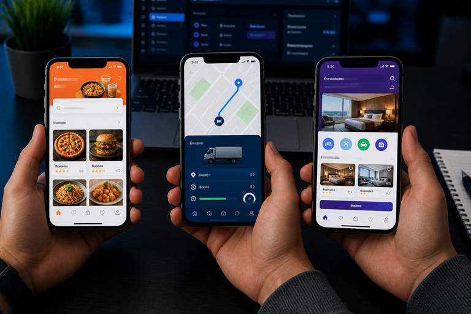

Featured QA Case Studies

Corporate & IT Service Platform (redn.in)
- Performed Functional, Smoke, and Regression Testing on core service modules ensuring system stability and seamless workflows.
- Validated UI components, navigation flows, and responsiveness across multiple browsers and devices.
- Identified and tracked defects in JIRA, ensuring faster resolution and improved product quality.
E-commerce Applications
valueking.in,
zobhilo.com, clicktoquery.com
- Tested complete user journeys including product search, cart management, checkout, and order processing workflows.
- Automated regression scenarios using Selenium WebDriver with Java and TestNG, reducing manual testing effort.
- Performed cross-browser and cross-device testing ensuring consistent UI/UX performance.
- Validated backend data consistency using SQL for transaction accuracy.


Government Service Portal (rajgirsafari.bihar.gov.in)
- Tested end-to-end booking workflows including search, ticket booking, payment, and refund processes.
- Verified QR code-based ticket generation and multilingual UI functionality for high-traffic usage.
- Performed Functional and Regression Testing to maintain system reliability.
- Validated database records ensuring consistency between frontend and backend systems.
Social & Community Platforms
sahayogmitra.com,
sahadevafoundation.com
- Tested donation systems, volunteer registration, and event management workflows for functional accuracy.
- Performed UI and Regression Testing to ensure smooth user experience across modules.
- Verified backend data mapping and synchronization across features.
- Collaborated with developers to resolve defects and improve system performance.

Healthcare & Hospital Websites
drprernapriya.com,
niroghospitals.com,
neuronhospitals.in
- Tested patient appointment booking systems, doctor listings, and contact workflows for functional accuracy.
- Validated UI responsiveness and accessibility across mobile and desktop devices for better patient experience.
- Performed regression testing on appointment flows and ensured data consistency for patient records.
- Ensured secure form submissions and smooth navigation for healthcare service pages.
Mobile & Web App Testing
Biryani Mahal,
Kiran Automobile, Rajgir Safari, Patna Zoo
- Performed end-to-end testing of mobile and web applications including user registration, booking, ordering, and payment workflows to ensure seamless functionality.
- Tested food delivery app (Biryani Mahal) for menu browsing, cart operations, order placement, and real-time status tracking to validate smooth user experience.
- Validated vehicle tracking and service workflows in Kiran Automobile app, ensuring accurate status updates, QR-based operations, and data consistency.
- Tested booking systems in Rajgir Safari and Patna Zoo apps including ticket booking, QR validation, and user journey flows under real-time conditions.
